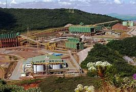

Sobre a Inovação na Mineração
A tecnologia está revolucionando a forma como extraímos recursos minerais. Aqui estão algumas das principais inovações:
- Automatização de Equipamentos: Utilização de máquinas e veículos autônomos para aumentar a eficiência e segurança nas operações.
- Inteligência Artificial para Análise de Dados: Aplicação de IA para otimização de processos e análise preditiva de falhas.
- Recuperação de Recursos com Eficiência: Tecnologias avançadas para a recuperação de metais e minerais, reduzindo desperdícios e melhorando a sustentabilidade.
Fonte: mineracao-tecnologica.com